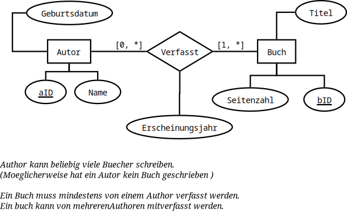
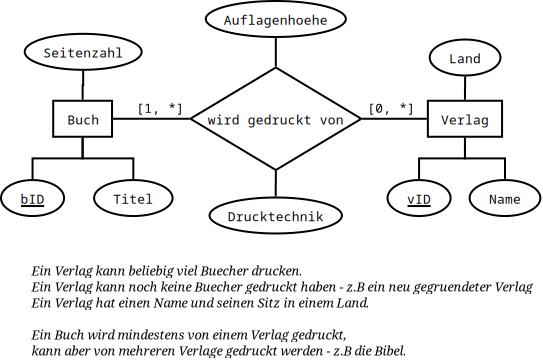
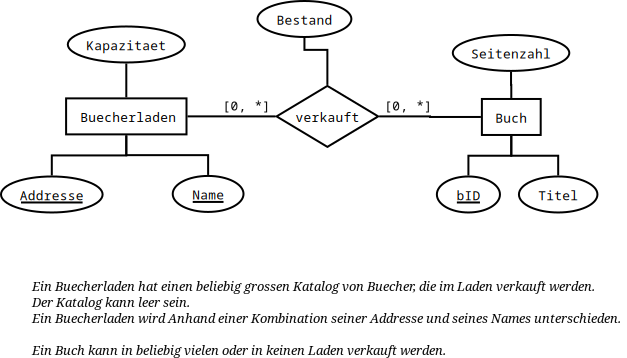
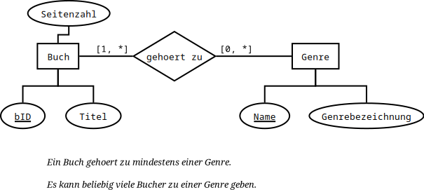
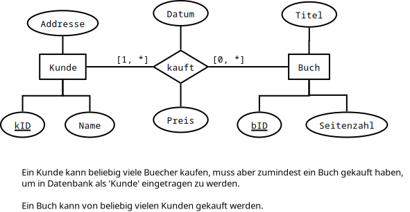

2 Relationale Algebra und SQL
2.1 Relationale Algebra - Fortsetzung
\(\pi_{\substack{\texttt{pid, Name}}}\bigl(\sigma_{\substack{\texttt{Rolle="Pilot"},\\ \texttt{Reichweite}\geq 15000}}(\texttt{Personal} \bowtie \texttt{Zulassung} \bowtie \texttt{Modell})\bigr)\)
\(\pi_{\texttt{Name}}\bigl( \sigma_{\texttt{Land='USA'}}( \beta_{\texttt{Code} \leftarrow \texttt{Ziel}}(\texttt{Flug}) \bowtie \texttt{Flughafen} \bowtie \texttt{Flugzeug} ) \bigr)\)
\(\pi_{\texttt{Code, Land}} \Biggl( \sigma_{\texttt{Name='F. Kohl'}}\biggl(\texttt{Flugzeug} \bowtie \\ \Bigl(\beta_{\texttt{Code} \leftarrow \texttt{Start}}(\pi_{\texttt{Start, fid}}(\texttt{Flug})) \cup \beta_{\texttt{Code} \leftarrow \texttt{Ziel}}(\pi_{\texttt{Ziel, fid}}(\texttt{Flug}))\Bigr)\biggr) \biggr)\)
\(\pi_{\texttt{pid, Name}}(\texttt{Personal}) - \\ \pi_{\texttt{pid, Name}}(\texttt{Personal} \bowtie \texttt{Crew} \bowtie \sigma_{\texttt{Datum} < \texttt{07.04.2013}}(\texttt{Flug}))\)
2.2 SQL-Anfragen
SQL:
select distinct C from R3Ergebniss:
{{C: 7}, {C: 8}}SQL:
select distinct * from R2 where B = rotErgebniss::
{{B: rot, C: 9}} {{B: blau, C: 8}}SQL:
select distinct * from R2 intersect select distinct * from R3;Ergebniss:
{{B: blau}, {C: 7}}SQL:
select * from R2 union select * from R3Ergebniss:
{{B: blau, C: 7}, {B: rot, C: 8}, {B: rot, C: 9}, {B: gruen, C: 8}, {B: gelb, C: 7}}SQL:
select * from R3 except ( select * from R2 );Ergebniss:
{{B: gruen, C: 8}, {B: gelb, C: 7}}SQL:
select distinct * from R1 natural jo R2Ergebniss:
{{A: q, B: rot, C: 8}, {A: q, B: rot, C: 9}}SQL:
select distinct * from R1, R2Ergebniss:
{{A: q, R1.B: rot, R2.B: blau, C: 7 }, {A: q, R1.B: rot, R2.B: gruen, C: 8}, {A: q, R1.B: rot, R2.B: gelb, C: 7}, {A: r, R1.B: gruen, R2.B: gelb, C: 7}, {A: r, R1.B: gruen, R2.B: gruen, C: 8}, {A: r, R1.B: gruen, R2.B: gelb, C: 7}}
2.3 Entsprechungen in SQL und der relationalen Algebra
- Die Anfragen entsprechen sich liefern jedoch nicht das gleiche Ergebniss, da der SQL-Ausdruck Duplikate zulaesst, waehrend bei der relationalen Abfrage die Duplikate entfernt werden.
- Die SQL-Anfrage liefert die Bezeichnung der Modelle, die nach Flughafen ‘CDG’ fliegen/geflogen haben.
- Der relationale Ausdruck liefert die Sitzplatzkapazitaeten der selben Modelle aus der SQL-Anfrage.
- Die erste SQL-Anrage gibt die ID’s der Co-Pilote und die Bezeichnungen der Modelle aus, dafuer sie zugelassen sind.
- Die zweite SQL-Anfrage gibt genau das gleiche Ergebniss wie die erste Anfrage. Man beachte, dass natural join in SQL immer von einem Kreuzprodukt und Selektionsoperationen simuliert werden kann.
2.4 ER-Modell
See the diagrams





2.5 Feedback
Zur Aufgabe 1.
1. Richtig, wenn auch > statt >= gemeint
2. Richtig 3. Sollte passen 4. Richtig
Zur Aufgabe 2:
1. Richtig 2. Ergebnis: Wieso B: Blau wenn ihr nach rot selektiert => - 0.25 P.
3.-7. Richtig
Zur Aufgabe 3:
1. Richtig unter der Annahme, dass Tabelle mehr als die abgedruckten Beispieldaten enthält (Stichwort Distinct)
2. Ebenfalls richtig
3. Dito
Zur Aufgab 4:
1. Richtig 2. Verlage sollen laut ML bitte mindestens ein Buch verlegen => - 0.25P. 3. Laut ML bitte [1,*] => - 0.25 P.
4. Richtig 5. Ebenfalls